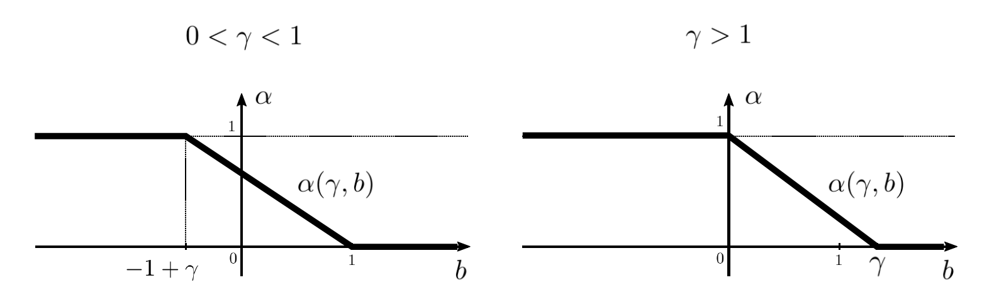

Energy:
$$N^b Diam(g) + \sum_{e:|e|>1}e^\gamma $$
$b >0$ $\rightarrow$ more N is big, more diameter must be smaller
$b <0$ $\rightarrow$ not motivated to decrease the diameter
$\gamma>1$ $\rightarrow$ two short edges cost less energy than a big one
$\gamma<1$ $\rightarrow$ two short edges cost more energy than a big one
For large $N$, the diameter of the graph is, in proba, close to $N^\alpha$
